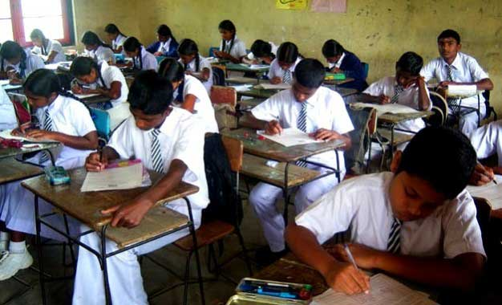

Primary Eduation Qualifications
GCE Ordinary Level - 2016(1st Sitting)
I sat down for the exam in 2016. At that time I was a Student at Asian Grammar School,Gothatuwa.My Results came in 2017.
- Commerce : A
- Religion : A
- IT : A
- English : A
- Arts : A
- Maths : B
- History : B
- Sinhala : B
- Science : C
GCE Advanced Level - 2019(1st Sitting) - Index No: 5054672
I did my exam in 2019.I was a Student at Nalanada College,Colombo.I got
a Destinction in Commerce for my O/L.So I decided to do Commerce A/Ls.
- Bussiness Studies : A
- Accounting : A
- Economics : B